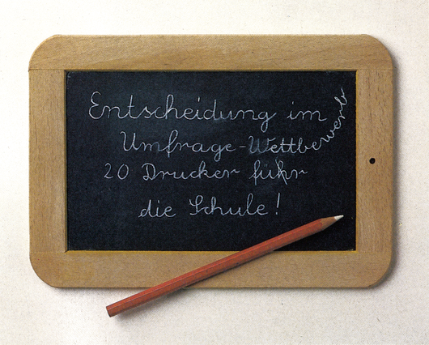

20 Drucker für Schulen
In unserer Ausgabe 8/86 starteten wir eine Umfrage »Computer in der Schule«. Unter den Antworten haben wir für zwanzig Schulen jeweils einen Drucker verlost. Hier die glücklichen Gewinner!

Obwohl der Erscheinungstermin für unsere Umfrage »Computer in der Schule« in die Hauptferienzeit fiel, war die Beteiligung erfreulich hoch. Wir sehen darin einen Beweis für das hohe Engagement der zuständigen Lehrkräfte, das auch dringend notwendig erscheint. Denn das hat diese Umfrage eindeutig gezeigt, es gibt noch viele Lücken, sowohl bei der Ausstattung mit Hard- und Software, als auch bei den Fortbildungsmöglichkeiten für die Lehrer.
Im Hardware-Bereich scheinen vor allem Drucker Mangelware zu sein. Darum freut es uns natürlich besonders, daß wir unter den teilnehmenden Schulen 20 Drucker des Typs »Brother HR-5 CP« verlosen konnten. Es ist ein Thermodrucker, der kompatibel zum Epson RX-80 ist und mit einem entsprechenden Interface auch am C 64, der in vielen Schulen vorhanden ist, angeschlossen werden kann.
| Staatliche Realschule | 8035 Gauting |
| Volksschule Waidhaus | 8481 Waidhaus |
| Grund- und Hauptschule | 7943 Ertingen |
| Leibniz-Gymnasium | 2407 Bad Schwartau |
| Schillerschule | 7700 Singen |
| Schule für Lernbehinderte | 6478 Nidda 1 |
| Robert-Bosch-Gesamtschule | 3200 Hildesheim |
| Abendgymnasium | 6076 Neu-Isenburg |
| Haupt- und Realschule | 2864 Hambergen |
| Staatl. Leibniz-Gymnasium | 6670 St. Ingbert |
| Bodelschwingh-Gymnasium | 5227 Windeck-Herchen |
| Berufliche Schulen | 3558 Frankenberg |
| Körperbehindertenschule | 7406 Mössingen |
| Mariengymnasium | 2942 Jever |
| Otto-Hahn-Gymnasium | 6740 Landau |
| Schyren-Gymnasium | 8068 Pfaffenhofen |
| Schulzentrum Burgstraße | 3100 Celle |
| Scheffel-Gymnasium | 7630 Lahr |
| Staatl. Realschule | 5528 Neuerburg |
| Leibniz-Gymnasium | 4600 Dortmund 1 |
Die in Tabelle aufgeführten Schulen haben ihre Gewinne Anfang Oktober erhalten. Wir hoffen, daß die Geräte bereits intensiv genützt werden.
(fl/kn)